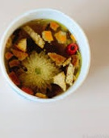
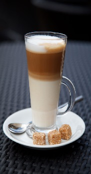

結合在地食材、地中海飲食理念與義式披薩的廚藝，首創於城市光廊內提供美味的義式柴燒窯烤披薩，以及各式義式料理與咖啡飲料等，提供市民及遊客美味、營養與品味的餐飲服務。
永續利用與原生素材的精神，把原來封閉陰暗的建築打開。
借景後方中央公園優美的景緻，用來裝飾的龍眼木除了裝飾作用外，更是平時作為柴燒窯爐的燃料的供應。
隨時再生利用‧而舒適的環境與多元的家具運用，讓遊客可以根據自己的喜好，享受著不同的空間氛圍。
同時結合披薩DIY。
結合導覽、DIY與創意，讓遊客來城市光廊可以品味不同的城市生活風貌。

增添神秘幻想的氣氛
我搭配各式彩色燈光的變化，平台可呈現不同的光景，為街頭表演者的舞台之一。
為街頭表演者的舞台之一
$200
阿媽共2001位市民的笑臉。主題在期許所有的高雄市民，都能以微笑來面對嶄新的每一天，讓高雄市呈現歡樂、和諧、美麗的風貌[2]，因年久髒汙，目前已貼上新圖案。
平台可呈現不同的光景
$180
過去城市光廊僅有音樂表演與咖啡，自2010年由建頤文創公司接手經營，該公司原本已有自有的義式柴燒窯烤披薩品牌比薩瑞亞‧容易的美味。
突破傳統思維
$230
以創新積極的態度，同意城市光廊能夠讓柴燒窯烤披薩進駐城市光廊，乃希望能夠為城市光廊建立起永續經營的基礎。